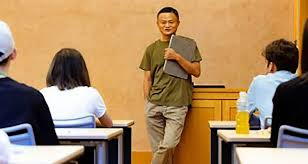

Early Life and Education

Ma was born in Hangzhou, Zhejiang, on 10 September 1964, as Ma Yun.[17] He became interested in learning the English language as a young boy and began practicing it with English-speaking visitors who frequented the Hangzhou International Hotel. At the age of 12, Ma bought a pocket radio and began listening to English radio stations frequently. For nine years, Ma rode 27 km (17 miles) on his bicycle every day to work as a tour guide of Hangzhou for foreigners in order to practice his English. He became pen pals with one of those foreigners, who nicknamed him "Jack" because he found it hard to pronounce his Chinese name.[18] When Ma was 13 years old, he was forced to transfer to Hangzhou No. 8 Middle School as he kept getting in fights. In his primary school days, Ma struggled scholastically, and it took two years for him to gain acceptance at an ordinary Chinese high school, as he only got 31 points in mathematics on the Chinese high school entrance exam.
In 1980, while he was riding his bike to practice English with tourists, he met Ken Morley, who was traveling with his family with the Australia-China Friendship Society.[19] Ken's son, David, became pen pals with Ma and kept in touch after the family left China. Years later, the Morleys hosted Ma in Australia, changing the course of his life completely. Ma later said: "Those 29 days in Newcastle were crucial in my life. Without those 29 days, I would never have been able to think the way I do today."[20]
In 1982, at the age of 18, Ma failed the nation-wide Chinese college entrance exam on his initial attempt, obtaining only 1 point in mathematics. Afterwards, he and his cousin applied to be waiters at a nearby hotel. His cousin was hired, but Ma was rejected on the grounds that he was "too skinny, too short, and in general, protruded a bad physical appearance that may have potentially ended up hurting the restaurant's image and possibly tarnishing its reputation."[21]
In 1983, Ma failed his college entrance exam for the second time.[17] However, his math score improved, increasing from his previous attempt to 19 points. The following year, Ma remained relentlessly determined to pursue higher education despite strong opposition from his family, who wanted him to choose a different career path as an alternative option. Undeterred, he decided to take the entrance exam a third time in 1984. On his third attempt, Ma scored 89 points on the math section, marking a significant improvement from his previous two attempts. Nonetheless, the minimum benchmark entrance requirement would have rendered Ma ineligible to be accepted into university, since his score was five points below the standardized minimum threshold for him to qualify.
However, Ma's academic fortunes would change since the enrollment target for prospective majors in Hangzhou Normal University's Department of English was not met, as some prospective students had the opportunity to be accepted and promoted into it, with Ma himself having ended up being promoted to the department's foreign language major. Having realized his aspirations to pursue higher education after enrolling at Hangzhou Normal University, Ma's academic performance began to improve substantially as he steadily achieved scholarly excellence over the course of his undergraduate studies. In recognition of his merits as evinced by his burgeoning academic achievements, Ma distinguished himself scholastically by consistently being ranked as among the top five students in Hangzhou Normal University's foreign language department due to the extensive English-language skills that he honed. He was also elected as the chairman of the student union and later became the chairman of the Hangzhou Federation of Students, with Ma having served in that capacity for two terms.[21]
In 1988, Ma earned a Bachelor of Arts degree in English from Hangzhou Normal University.[22] [23]After graduation, he became a lecturer in English and international trade at Hangzhou Dianzi University. Ma also claims to have applied to Harvard Business School ten times consecutively, only to have ended up being rejected every time in spite of his persistent efforts.[24]
Career

Early career
According to Ma's autobiographical speech,[25] after graduating from Hangzhou Normal University in 1988, Ma applied for 31 different odd entry-level jobs and was rejected for every single one. "I went for a job with the KFC; they said, 'you're no good'", Ma told interviewer Charlie Rose. "I even went to KFC when it came to my city. Twenty-four people went for the job. Twenty-three were accepted. I was the only guy [rejected] ...".[23][26] During this period, China was nearing the end of its first decade following Deng Xiaoping's economic reforms.
In 1994, Ma heard about the Internet and also started his first company,[27] Hangzhou Haibo Translation Agency (杭州海波翻譯社, Hángzhōu Hǎibō Fānyì Shè), an online Chinese translation agency. In early 1995, he travelled abroad to the United States on behalf of the Hangzhou municipal government with colleagues who had helped introduce him to the Internet.[27] Although he found information related to beer from many countries, he was surprised to find none from China. He also tried to search for general information about China and again was surprised to find none. So he and his friend created an "ugly" website pertaining to information regarding Chinese beer.[28] He launched the website at 9:40 am, and by 12:30 pm he had received emails from prospective Chinese investors wishing to know more about him and his website. This was when Ma realized that the Internet had something great to offer. In April 1995, Ma and his business partner He Yibing (a computer instructor), opened the first office for China Pages, and Ma started their second company. On 10 May 1995, the pair registered the domain chinapages.com in the United States. Within a span of three years, China Pages cleared approximately 5,000,000 RMB in profit which at the time was equivalent to US$642,998 (approximately $1.18 million today).
Ma began building websites for Chinese companies with the help of friends in the United States.[29] He said that "The day we got connected to the Web, I invited friends and TV people over to my house", and on a very slow dial-up connection, "we waited three and a half hours and got half a page", he recalled. "We drank, watched TV and played cards, waiting. But I was so proud. I proved the Internet existed".[30]
From 1998 to 1999, Ma headed an information technology company established by the China International Electronic Commerce Center, a department of the Ministry of Foreign Trade and Economic Cooperation. In 1999, he quit and returned to Hangzhou with his team to establish Alibaba, a Hangzhou-based business-to-business marketplace site in his apartment with a group of 18 friends.[31] He started a new round of venture development with 500,000 yuan.
In October 1999 and January 2000, Alibaba won a total of a $25 million foreign venture seed capital from the American investment bank, Goldman Sachs and the Japanese investment management conglomerate SoftBank.[27] The program was expected to improve the domestic Chinese e-commerce market and perfect an e-commerce platform for online Chinese enterprises to establish a presence for themselves to compete, especially fostering the growth of Chinese small and medium-sized enterprises (SMEs) as well as addressing challenges surrounding China's entrance into the World Trade Organization in 2001. Eventually, Alibaba began to show signs of profitability three years later as Ma wanted to improve the global e-commerce system. Since 2003, Ma established Taobao Marketplace, Alipay, Ali Mama and Lynx. After the rapid rise of Taobao, American e-commerce giant eBay offered to purchase the company. However, Ma rejected their offer, instead garnering support from Yahoo co-founder Jerry Yang who offered a $1 billion investment in upfront capital for the potential purpose of expanding Alibaba's corporate operations.

Chairman of Alibaba Group
Since 1999, Ma served as the executive chairman of Alibaba Group, which has remained one of China's most prominent high-technology holding companies in the two decades since it inception presiding over nine major subsidiaries: Alibaba.com, Taobao Marketplace, Tmall, eTao, Alibaba Cloud Computing, Juhuasuan, 1688.com, AliExpress.com, and Alipay. At the annual general meeting of shareholders for Alibaba.com in May 2010, Ma announced Alibaba Group would begin in 2010 to earmark 0.3% of annual revenue to environmental protection, particularly on water- and air-quality improvement projects. Of the future of Alibaba, he has said, "our challenge is to help more people to make healthy money, 'sustainable money', money that is not only good for themselves but also good for the society. That's the transformation we are aiming to make."[32]
Despite achieving massive entrepreneurial and investment success in the Chinese high-technology industry and the fact that Alibaba is a high-technology company, Ma was never a technical expert on computer technology nor did he possess the extensive breadth of executive managerial skills and background experience or depth of technical know-how that would have nonetheless otherwise qualified him to competently run a technology company or operate as an independent technology entrepreneur on his own. Even though Ma's formal educational background and extensive training was in English rather than in a technical subject, his dearth of technical expertise did not deter him from being able to competitively distinguish himself from the quintessential Chinese technology mogul. As Ma with his distinct profile stands out among his entrepreneurial contemporaries throughout the Chinese high-technology industry, many of whom typically have a foundational background in computer engineering and science as part of their formal academic training and educational makeup. Instead, Ma parlayed his educational background to use in an entrepreneurial context by fashioning himself as a promoter, businessman, manager, administrator, and organizer who possessed the soft skills, emotional capacity, and personality with a knack for leading and employing specialists of expert ability from every conceivable technical domain. At a press conference in 2010, Ma made clear with regards to the lack of his technical expertise by revealing to the public that he had never written a line of computer code, nor had ever made one sale to a customer, and that he only acquired a personal computer to do business with for the first time at the age of 33.[33]
In 2011, it was announced that one of his companies had gained control of Alipay, formerly a subsidiary of Alibaba Group, so as to "comply with Chinese law governing payment companies in order to secure a license to continue operating Alipay.[34] Numerous analysts reported that Ma sold Alipay to himself below market value without notifying the board of Alibaba Group or the other major owners Yahoo and Softbank, while Ma stated that Alibaba Group's board of directors were aware of the transaction. The ownership dispute was resolved by Alibaba Group, Yahoo! and Softbank in July 2011.[35] In November 2012, Alibaba's online transaction volume exceeded one trillion yuan. Ma stepped down as the chief executive officer of Alibaba on 10 May 2013, but remained as the executive chairman of the corporation. In September 2014, it was reported that Alibaba was raising over $25 billion in an initial public offering (IPO) on the New York Stock Exchange.[36] As of 2016, Ma is the owner of Château de Sours in Bordeaux, Chateau Guerry in Côtes de Bourg and Château Perenne in Blaye, Côtes de Bordeaux.[37] On 9 January 2017, Ma met with United States president-elect Donald Trump at Trump Tower, to discuss the potential of 1 million job openings in the following five years through the expansion of the presence of Alibaba's business interests in the United States.[38] On 8 September 2017, to celebrate Alibaba's 18th year of its establishment, Ma appeared on stage and gave a Michael Jackson-inspired performance. He also performed a partial rendition of Elton John's 1994 hit single Can You Feel The Love Tonight while being dressed up as a lead heavy metal singer at a 2009 Alibaba birthday event.[39] In the same month, Ma also partnered with Hong Kong business tycoon, Sir Li Ka-shing in a joint venture to offer a digital wallet service in Hong Kong.[40]
Ma announced on 10 September 2018, that he would step down as executive chairman of Alibaba Group Holding in the coming year.[41] Ma denied reports that he was forced to step aside by the Chinese government[42] and stated that he wants to focus on philanthropy through his foundation.[43] Daniel Zhang would then lead Alibaba as the current executive chairman.[44][11] Ma stepped down from the board of Alibaba on 1 October 2020.[45]